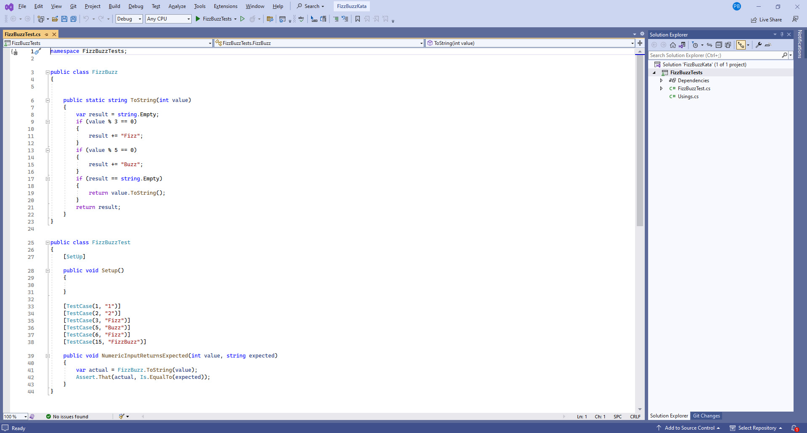

North East Coding Dojo - July 2023
Codurance held their very first North East Coding Dojo in Newcastle. Codurance is a global software consultancy that helps businesses build better, sustainable technical capabilities that supports growth and innovation. They have seven office locations, been around for ten years and have over 250 employees and 99% permanent employees. Their co-founders started the London Software Craftsmanship Community and let way to inspire and help with creation of other communities. Programming is a skill and aim for mastery and balance professionalism and pragmatism and one of their co-founders wrote a book “The Software Craftsman”.
The Software Crafters Newcastle Community is about learning and collaboration and helping others and building a community, to help improve industry standards and to enjoy the craft! They come together and go through a Kata and collaboration and improve on ideas and create solutions for things. Pick the strongest language and apply extreme programming practices and have test driven development where write a test that will fail then write some code to make it pass and red / green refactor cycle and focus on implementing behaviours with the tests and do a pomodoro for twenty minutes and if in pairs one person can work for twenty minutes and swap places. It is a collaborative experience and are here to work together.
You are not allowed to write any production code unless it is to make a failing unit test pass. You are not allowed to write any more of a unit test than is sufficient to fail; and compilation failures are failures. You are not allowed to write any more production code than is sufficient to pass the one failing unit test.
Let's write some code! FizzBuzz Kata. This involved writing an example that output Fizz when a value was divisible by three and Buzz when divisible by five and then output FizzBuzz if divisible by both three and five. Such as this one using C# by building up the code step-by-step and only writing code that would pass the test and going on from there, but starting with a non-existent class and method which was the first error to solve to the end where there was a solution driven by the tests, embracing and helping to understand Test Driven Development or TDD!
For a few the session was their first experience of TDD, helped understand how and where to start with writing unit tests first, can get the basics with a simple example but as build up experience, also helps think about the pathway to TDD.